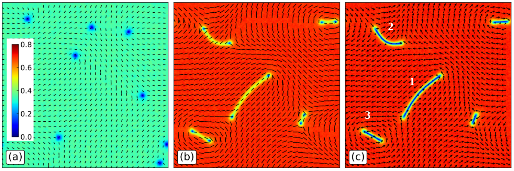
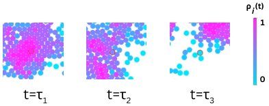

Active matter
Phases and phase transitions in inhomogeneous active systems.
Active systems · Phase transitions
Research
I study active matter and biophysics through continuum descriptions, microscopic models, and computational methods.
01 / Research
My research centers on active matter and biophysics, with an interest in how interactions give rise to self-organization in complex systems.
Phases and phase transitions in inhomogeneous active systems.
Coarse-grained hydrodynamic descriptions of collective dynamics.
Microscopic models and reinforcement learning methods for active systems.
Publications & scholarly profiles
Explore my published research.
Research in motion
A movie from my research, showing the evolution of a color-coded field and local orientations.
Time-dependent structure
Short black line segments show local orientations over a color-coded field. As the movie progresses, curved low-value regions change shape and the orientation pattern reorganizes. The original axes and color scale are retained.
Visual description of the supplied movie. Specific model parameters are not assigned here.
Download movieFrom the papers
Figures from selected publications, with links to the full work.

Active nematic–polar mixtures
Figure 1 from “String formation and arrested ordering kinetics in nematics induced by polar particles.”
Explore the paper (opens in a new tab)P. K. Mishra, P. S. Mondal, P. Jena & S. Mishra
arXiv:2502.15477v2, Fig. 1
CC0 1.0 (opens in a new tab)

Fluctuations & transport
Figure 1 from “Effective single-particle theory for active particles using local density fluctuations.”
Explore the paper (opens in a new tab)J. Joshi, P. K. Mishra & S. Mishra · arXiv:2401.02247v4, Fig. 1 · CC0 1.0 (opens in a new tab)
Contact
Mechanobiology Institute
National University of Singapore